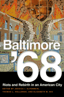

<body bgcolor="#FFFFFF" text="#000000" link="#0000FF" vlink="#CC0000" alink="#CC0000"><center><hr width="350" size="1" align="center" noshade>The first comprehensive study of one city, Baltimore, forty years after the unrest that swept across some 120 U.S.<hr width="350" size="1" align="center" noshade><p><a href="https://cdcshoppingcart.uchicago.edu/Cart/ChicagoBook.aspx?ISBN=9781439906613&&PRESS=temple" target="_top">Buy this book!</a> | <a href="https://cdcshoppingcart.uchicago.edu/Cart/Cart.aspx?PRESS=temple" target="_top">View Cart</a> | <a href="https://cdcshoppingcart.uchicago.edu/Cart/Cart.aspx?PRESS=temple" target="_top">Check Out</a></p><p></p></center><!--none//--><h1>Baltimore '68</h1>
<H2>Riots and Rebirth in an American City</H2>
<h3>edited by Jessica I. Elfenbein, Thomas L. Hollowak and Elizabeth M. Nix</h3>
<P>cloth 1-4399-0661-0 $75.50, Jun 11, <FONT COLOR=#990033>Available</FONT>
<br>paper 1-4399-0662-9 $31.95, Jun 11, <FONT COLOR=#990033>Available</FONT>
<br>Electronic Book 1-4399-0663-7 $31.95 <FONT COLOR=#990033>Available</FONT>
<BR> 294 pp
6x9
1&nbsp;map(s) 20&nbsp;halftones
</P><BLOCKQUOTE><I>"</i>Baltimore �68<i> deserves a prominent place on the small bookshelf of essential histories of the 1960s urban uprisings and their effects. The contributors to this volume together offer a rich, multifaceted account of a city in turmoil."</i><BR>&#151<b>Thomas J. Sugrue</b>, author of <i>Sweet Land of Liberty: The Forgotten Struggle for Civil Rights in the North</i></p></I></BLOCKQUOTE>
<p>In 1968, Baltimore was home to a variety of ethnic, religious, and racial communities that, like those in other American cities, were confronting a quickly declining industrial base. In April of that year, disturbances broke the urban landscape along lines of race and class.
</p>
<p>This book offers chapters on events leading up to the turmoil, the riots, and the aftermath as well as four rigorously edited and annotated oral histories of members of the Baltimore community. The combination of new scholarship and first-person accounts provides a comprehensive case study of this period of civil unrest four decades later.
</p>
<p>This engaging, broad-based public history lays bare the diverse experiences of 1968 and their effects, emphasizing the role of specific human actions. By reflecting on the stories and analysis presented in this anthology, readers may feel empowered to pursue informed, responsible civic action of their own.
</p>
<p><em>Baltimore '68</em> is the book component of a larger public history project, &quot;Baltimore '68 Riots: Riots and Rebirth.&quot; The project's companion website (http://archives.ubalt.edu/bsr/index.html ) offers many more oral histories plus photos, art, and links to archival sources. The book and the website together make up an invaluable teaching resource on cities, social unrest, and racial politics in the 1960s. The project was the corecipient of the 2009 Outstanding Public History Project Award from the National Council on Public History.
</p>
<BR>&nbsp;<h2>Excerpt</h2><P>Excerpt available at <a href="http://www.temple.edu/tempress">www.temple.edu/tempress</a></p>
<BR>&nbsp;<h2>Reviews</h2>
<p><i>"With extensive archival research and gripping oral interviews, </i>Baltimore �68<i> offers a deeply informative study of the shattered dreams, bitter memories, and uneasy revitalization of one of America�s great urban centers. This book serves as an example of academic scholarship, civic engagement, and community collaboration at its very best."</i> <br>&#151<b>Bobby J. Donaldson</b>, University of South Carolina, Columbia
<p><i>"These essays and primary accounts examine the roots of the broad spectrum of events that led to rioting in Baltimore following Martin Luther King�s assassination and how these events shaped the social and economic fabric of today�s Baltimore. I know it will be taken from library shelves for many years to come as a primary resource for historical study."</i> <br>&#151<b>Carla D. Hayden</b>, CEO, Enoch Pratt Free Library, Baltimore
<p><I>"[T]he work is strong throughout... a welcome addition to what is emerging as a new wave of high-quality scholarship on urban racial violence during the 1960s. Its greatest strength is its multifaceted, interdisciplinary approach to the subject, which offers ample space for readers to appreciate the clashing perspectives and contested meanings of this particular urban disorder. Like the best scholarly work on race riots in the 1960s, this book demolishes claims that racial discord was the result of conspiratorial 'outside agitators,' communists, or black radicals."</I><br>&#151<b><i>Public Historian</b></i>
<p><i>"</i>Baltimore �68<i> is a collection of ten essays and four expertly edited oral histories that provide useful insights into the local and national significance of the responses in Baltimore to the assassination of Martin Luther King Jr."</i> <br>&#151<b><i>Journal of American History</i></b>
<p><i>"The thematic consistency across individual chapters is impressive. Altogether, the authors demonstrate that the areas most affected by the riots struggled to revive not because African Americans burned down their neighborhoods and betrayed their white neighbors�as some in the Baltimore region still maintain�but because of official neglect and racist, short-sighted, and profit-driven urban planning that predated and succeeded April 1968. They rightly emphasize suburban and industrial flight and redlining, blaming public policy for urban decline, not so-called black pathology and criminality."</i> <br>&#151<b><i>Journal of Urban History</i></b>
<BR>&nbsp;<h2>Contents</h2><P>
<p>Foreword &bull; Howard F. Gillette, Jr.
<br>Preface
<br>Acknowledgments</p>
<p><b>Part I: APRIL 1968</b>
<br>1. The Dream Deferred: The Assassination of Martin Luther King, Jr., and the Holy Week Uprisings of 1968 &bull; Peter B. Levy
<br>2. Jewell Chambers: Oral History &bull; edited by Linda Shopes
<br>3. Why Was There No Rioting in Cherry Hill? &bull; John R. Breihan</p>
<p><b>Part II: THE POLITICAL, RELIGIOUS, AND URBAN PLANNING CONTEXT</b>
<br>4. �White Man�s Lane�: Hollowing Out the Highway Ghetto in Baltimore &bull; Emily Lieb
<br>5. Spiro T. Agnew and the Burning of Baltimore &bull; Alex Csicsek
<br>6. Thomas Carney: Oral History &bull; edited by Linda Shopes
<br>7. �Church People Work on the Integration Problem�: The Brethren�s Interracial Work in Baltimore, 1949�1972 &bull; Jessica I. Elfenbein
<br>8. Convergences and Divergences: The Civil Rights and Antiwar Movements�Baltimore, 1968 &bull; W. Edward Orser and Joby Taylor</p>
<p><b>Part III: CONSEQUENCES FOR EDUCATION, BUSINESS, AND COMMUNITY ORGANIZING</b>
<br>9. The Pats Family: Oral History &bull; edited by Linda Shopes
<br>10. How the 1968 Riots Stopped School Desegregation in Baltimore &bull; Howell S. Baum
<br>11. Pivot in Perception: The Impact of the 1968 Riots on Three Baltimore Business Districts &bull; Elizabeth M. Nix and Deborah R. Weiner
<br>12. �Where We Live�: Greater Homewood Community Corporation, 1967�1976 &bull; Francesca Gamber
<br>13. Planning for the People: The Early Years of Baltimore�s Neighborhood Design Center &bull; Mary Potorti
<br>14. Robert Birt: Oral History &bull; edited by Linda Shopes</p>
<p>Epilogue: History and Memory: Why It Matters That We Remember &bull; Clement Alexander Price
<br>Contributors
<br>Index</p>
</P><BR>&nbsp;<H2>About the Author(s)</H2>
<P><strong>Jessica I. Elfenbein</strong> is an Associate Provost and Professor of History and Community Studies at the University of Baltimore. She directed the prize-winning Baltimore '68: Riots and Rebirth project and is the author of <em>Civics, Commerce, and Community: The History of the Greater Washington Board of Trade, 1889-1989</em>, and <em>The Making of a Modern City: Philanthropy, Civic Culture and the Baltimore YMCA</em>. She is also a coeditor of <em>From Mobtown to Charm City: New Perspectives on Baltimore's Past</em>.</P>
<P><strong>Thomas L. Hollowak</strong> is Associate Director for Special Collections at the University of Baltimore's Langsdale Library. He created and maintains the Baltimore '68: Riots and Rebirth website, and is the author of <em>University of Baltimore</em>, and a coeditor of <em>From Mobtown to Charm City: New Perspectives on Baltimore's Past</em>.</P>
<P><strong>Elizabeth (Betsy) M. Nix</strong> is an Assistant Professor in the Division of Legal, Ethical, and Historical Studies and the Director of the Community Studies and Civic Engagement program at the University of Baltimore. She oversaw the collection of oral histories for the Baltimore �68: Riots and Rebirth project.</P>
<BR><H2>Subject Categories</H2>
<p><A HREF="/tempress/urban.html" TARGET="_top">Urban Studies</a>
<BR><A HREF="/tempress/history.html" TARGET="_top">History</a>
<BR><A HREF="/tempress/race.html" TARGET="_top">Race and Ethnicity</a>
</p>
<p align="center"><a href="https://cdcshoppingcart.uchicago.edu/Cart/ChicagoBook.aspx?ISBN=9781439906613&&PRESS=temple" target="_top">Buy this book!</a> | <a href="https://cdcshoppingcart.uchicago.edu/Cart/Cart.aspx?PRESS=temple" target="_top">View Cart</a> | <a href="https://cdcshoppingcart.uchicago.edu/Cart/Cart.aspx?PRESS=temple" target="_top">Check Out</a></p><p><font face="Arial" size="1"><a href="copyright.html" onMouseOver="window.status='Web Copyright Policy';return true;" onMouseOut="window.status=''" title="Web Copyright Policy">&copy;</a> 2016 <a href="http://www.temple.edu" target="new" onMouseOver="window.status='Link to Temple University home page';return true;" onMouseOut="window.status=''" title="Link to Temple University home page">Temple University</a>. All Rights Reserved. http://www.temple.edu/tempress/titles/2148_reg.html</font></p>